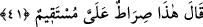
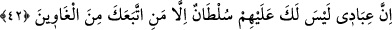

Dünyânın silahı insanlarla birlikte olmak, hapishânesi uzlettir.”
Ey Câmî, her sefîl gibi mülk ve mala gönül bağlama
Ferâgat ve kanâat hazînesi sana yeter
“İkincisi şeytandır. Şeytanın silâhı tokluk, hapishânesi açlıktır.”
Safâ ehlinin gıdası olan açlık
Mihnet ve ibtilâdır ehl-i hevâya.
“Üçüncüsü nefistir. Nefsin silahı uyku, hapishânesi uykusuzluktur.”
Nergis gaflet uykusundayken bülbül yüz vuslata erdi
Uyuyan uyanıncaya kadar devlet uyanıklara ulaştı
“Dördüncüsü hevâdır. Hevânın silahı konuşmak, hapishânesi susmaktır.”
Eğer çok biliyorsan az söyle
Bire yüz söyleme, yüze bir söyle
41. Allah Teâlâ buyurdu ki: “İşte bana varan doğru yol budur.”
“Allah Teâlâ” İblis’e “buyurdu ki: “İşte bana varan doğru yol” eğriliği ve
çarpıklığı olmayan yol “budur.” Yâni muhlasların senin azdırmandan korunmasıdır. O
yola riâyet etmek benim üzerimdedir. Yâni onun gerçekleşmesini te’kid etmek ve vâki
olmasını kesinleştirmek gözetilmesi gereken bir hak gibidir. ‘Gibidir’ diyoruz, çünkü
ehl-i sünnete göre Allah’a hiçbir şey gerekli/zorunlu değildir.
“Müstakîm (doğru)” ifâdesinin ‘eğrilik ve sapma olmadan Bana vuslata ulaştıran yol
budur’ mânâsında ihlâsa işâret olması da mümkündür. Yükselme/yücelme (isti‘lâ)
harfinin (alâ), son/nihâyet (intihâ) bildiren harfe (ilâ) tercih edilmesi, bu yolun
doğruluğunu te’kid etmek ve bu yolda sebât edenlerin yüceleceklerine şâhidlik etmek
içindir.
42. “Benim hâlis kullarıma karşı senin bir hâkimiyetin yoktur. Ancak sana uyan